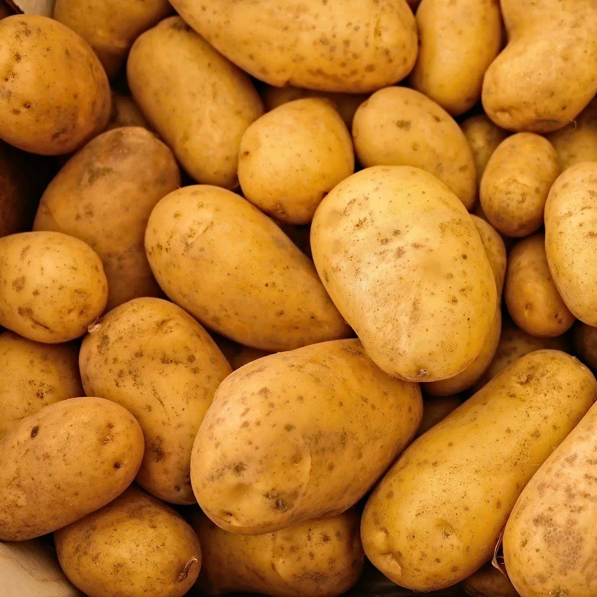
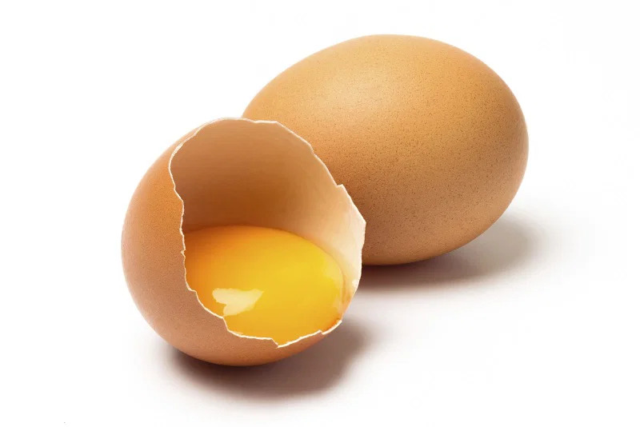
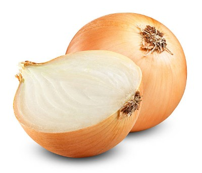

Receta Tortilla de Patatas
|
Tortilla de Patatas

La tortilla de patatas, tortilla de papaso tortilla española es una tortilla u omelet a la que se le agregan patatas troceadas.
Se trata de uno de los platos más conocidos y emblemáticos de la cocina española, siendo un producto muy popular que se puede
encontrar en casi cualquier bar o restaurante del país.
|
|
Tabla de Ingredientes
| Ingrediente |
Cantidad |
| Patatas |
500 g |
 |
| Huevo |
2 x Persona |
 |
| Cebolla |
1 Unidad |
 |
| Sal fina |
1 cucharadita |
 |
| Aceite de Oliva |
1 cucharadita |
 |
|
|
Realizar paso a paso
- Preparación de patatas
El primer truco o consejo que vamos a darte es que elijas bien el tipo de patatas que vas a utilizar. La variedad Monalisa es perfecta para preparar la tortilla española, pero también puedes optar por otras variedades, procurando que sean patatas nuevas.

Una vez que tenemos las patatas las pelaremos, lavaremos y secaremos bien. Ahora hay que trocearlas, en rodajas finas e intentando que queden todas de un grosor similar. Nosotros lo hacemos con la parte ancha de un rallador, así quedan de un tamaño perfecto para la tortilla de patatas, pero hay que hacerlo con un poco de fuerza y mucho cuidado de no cortarse. Y, si lo prefieres, puedes cortarlas a cuchillo.
¿Con o sin cebolla?
Como te decía en la lista de ingredientes, la cebolla es opcional, depende del gusto de cada uno, así que puedes optar por ponerla o no. A nosotros en casa nos gusta la tortilla de patatas con cebolla, eso sí, muy picadita, casi no se nota en la textura, pero le aporta un punto extra de jugosidad. 
Coción de patatas
Un punto muy importante para que nos quede una buena tortilla, es cómo cocinamos las patatas. Después de salarlas, hay que ponerlas en una sartén amplia con abundante aceite caliente, pero hay que bajar enseguida el fuego y cocinarlas a temperatura suave, para que se cuezan más que freírse. Mientras las dejamos al fuego cocinándose, podemos ir preparando los huevos.
Cuando las patatas estén aproximadamente a media cocción, es el momento de incorporar la cebolla a la sartén, si es que hemos decidido ponerla. Moveremos y dejamos al fuego hasta que las patatas estén hechas.

Un truco para saber cuándo las patatas están en su punto es meter entre ellas una espumadera: si las patatas se parten sin ofrecer resistencia, es el momento de sacarlas. Lo haremos utilizando la espumadera e inclinando la sartén, procurando que nos queden muy bien escurridas.
Preparación de Huevos
Para que la tortilla de patatas nos quede jugosa vamos a utilizar una proporción de, aproximadamente, 1 huevo por cada 100 g de patatas o lo equivalente a 2 huevos x personas, es decir, en nuestro caso utilizaremos 6 huevos.

Los iremos cascando aparte, uno a uno, para comprobar que están bien, y, una vez que los tengamos todos en un bol, batimos los huevos y salamos ligeramente.
Mezlar y Preparar la sartén
Juntamos las patatas con los huevos batidos y mezclamos un poco.

Por otra parte, ponemos al fuego una sartén antiadherente con una pizca de aceite. Utilizaremos una sartén que podamos manejar bien, para que nos resulte fácil dar la vuelta a la tortilla de patatas.
Cocinar la tortilla
Cuando el aceite esté caliente, pasamos la mezcla de huevos y patatas a la sartén y
dejamos que se cocine hasta que los bordes estén cuajados y un poco dorados y se separen fácilmente de la sartén. |

|
Para darle la vuelta, nosotros utilizamos un plato un poquito más grande que la sartén:
sujetándolo bien y de forma rápida, le damos la vuelta a la tortilla de patatas. Después la volvemos a poner al fuego y, a temperatura suave, dejamos que se termine de cuajar por el otro lado. |

|
| Solo nos queda darle la vuelta de nuevo para comprobar si de este lado está también cuajada y tostada a nuestro gusto, ¡ya la tenemos lista! |

|